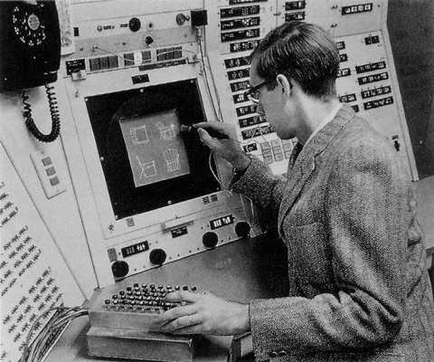
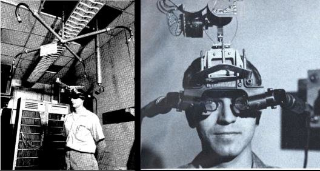

Né le 16 mai 1938 à Hastings, dans le Nebraska, il est un informaticien américain. Il a suivi plusieurs formations et études, notamment à :
.l'Institut de technologie du Massachusetts
.le California Institute of Technology ou Caltech
Il est plus tard devenu professeur. On le surnomme le père de l'infographie, car il a inventé le premier système de manipulation graphique, le Sketchpad. Cela lui vaut l'honneur de recevoir le prix Turing en 1988. (cf.prix)Le 7 Juin 1963, Ivan Sutherland présente le Sketchpad en soumettant sa thèse de doctorat au MIT. Le Sketchpad, l'un des premiers programmes pour le TX-0, permettait la manipulation directe d'objets sur un écran d'ordinateur. Grâce au Sketchpad, un utilisateur pouvait créer et manipuler des figures graphiques avec un stylet lumineux. Cette thèse a révolutionné les bases des interfaces graphiques modernes, telles que les fenêtres et icônes utilisées aujourd'hui.Cette invention est considérée comme l'une des fondatrices de l'informatique
Il y a près de soixante ans, à une époque où les ordinateurs occupaient une pièce entière, Sutherland a non seulement inventé le premier système permettant une interaction graphique avec ces machines, mais il a également développé le premier casque de réalité virtuelle
Reçoit le prix Turing pour l'invention de Sketchpad en 1988.
Reçoit la médaille John von Neumann en 1988.(attribuée à une ou deux personnes pour des « accomplissements extraordinaires en sciences et technologies informatiques »).
Reçoit le prix de Kyoto en 2012 pour son travail sur le développement des capacités graphiques des ordinateurs et des interactions homme-machine, avec son élève Robert Sproull,créé en 1968.
Le BBVA Foundation Frontiers of Knowledge Award.